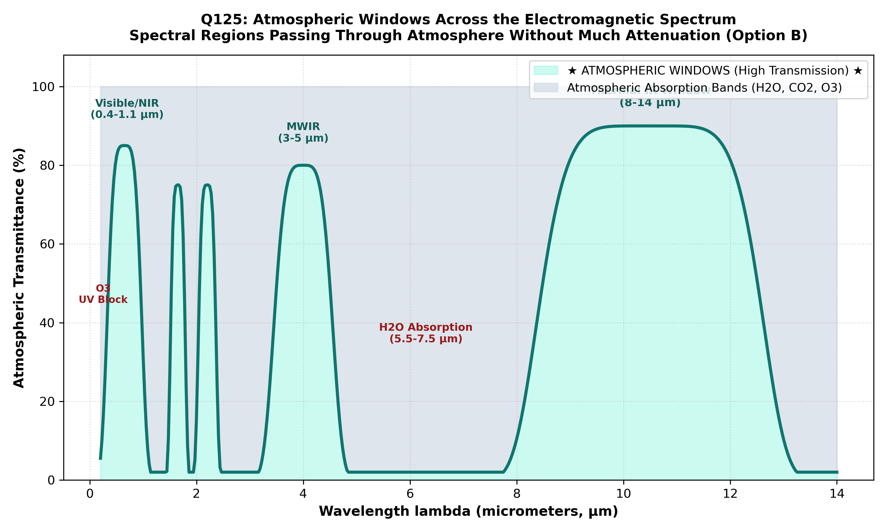

Electromagnetic radiation propagating through the Earth's atmosphere undergoes attenuation via two distinct physical processes: scattering (Rayleigh, Mie, and non-selective scattering by gas molecules, aerosols, and water droplets) and absorption (quantum transition absorption by atmospheric gases, primarily $\text{H}_2\text{O}, \text{CO}_2, \text{O}_3, \text{CH}_4$, and $\text{N}_2\text{O}$).
Atmospheric absorption varies dramatically across the electromagnetic spectrum. The spectral regions where atmospheric gases absorb strongly are termed absorption bands (opaque to EMR). Conversely, the specific wavelength ranges where the atmosphere is highly transparent and allows radiation to pass through without substantial attenuation are formally designated as Atmospheric Windows (Lillesand & Kiefer; Sabins; Bangar):
| Atmospheric Window | Spectral Range | Primary Absorbers Outside Window | Remote Sensing Sensor Utilization |
|---|---|---|---|
| Visible & Near-Infrared (VNIR) | $0.4\text{--}1.0\text{ }\mu\text{m}$ | UV ozone absorption ($\lambda < 0.3\text{ }\mu\text{m}$) and water vapor bands | Landsat, Sentinel-2, IRS LISS-IV, aerial cameras; optical vegetation & geology mapping. |
| Shortwave Infrared 1 (SWIR-1) | $1.55\text{--}1.75\text{ }\mu\text{m}$ | $\text{H}_2\text{O}$ vapor absorption at $1.4\text{ }\mu\text{m}$ and $1.9\text{ }\mu\text{m}$ | Moisture stress, snow/cloud discrimination, lithological clay delineation. |
| Shortwave Infrared 2 (SWIR-2) | $2.08\text{--}2.35\text{ }\mu\text{m}$ | Strong $\text{H}_2\text{O}$ absorption at $1.9\text{ }\mu\text{m}$ and $\text{CO}_2$ at $2.7\text{ }\mu\text{m}$ | Hydrothermal alteration minerals (alunite, kaolinite, illite), carbonate absorption. |
| Thermal Infrared 1 (TIR-1) | $3.5\text{--}4.1\text{ }\mu\text{m}$ (Mid-IR) | $\text{CO}_2$ at $4.3\text{ }\mu\text{m}$ | Wildfire detection, volcanic hot-spot monitoring, night sea-surface temperature. |
| Thermal Infrared 2 (TIR-2) | $8.0\text{--}14.0\text{ }\mu\text{m}$ (split by $\text{O}_3$ at $9.6\text{ }\mu\text{m}$) | Strong $\text{H}_2\text{O}$ vapor band below $8\text{ }\mu\text{m}$ and $\text{CO}_2$ above $14\text{ }\mu\text{m}$ | Peak terrestrial thermal emission ($\sim 300\text{ K}$, $\lambda_{\text{max}} \approx 9.7\text{ }\mu\text{m}$); land surface temperature. |
| Microwave Window | $1\text{ mm}$ to $>1\text{ m}$ | Minor oxygen ($60\text{ GHz}$) and $\text{H}_2\text{O}$ ($22\text{ GHz}$) lines | Synthetic Aperture Radar (SAR), radar altimeters; complete cloud/haze penetration. |

Because satellite sensors cannot record meaningful surface data in opaque spectral regions, all spaceborne optical, thermal, and microwave sensors are strictly engineered to operate inside these Atmospheric Windows (Option B).
By international scientific definition across remote sensing, meteorology, and astrophysics (Lillesand & Kiefer; Sabins; Bangar, p. 208), an Atmospheric Window is a wavelength band where the transmission of electromagnetic radiation through the Earth's atmosphere approaches high percentages with minimal attenuation from absorption or scattering.
The "ozone hole" refers to seasonal anthropogenic stratospheric depletion of ozone ($\text{O}_3$) over Antarctica caused by chlorofluorocarbons (CFCs). It is an atmospheric environmental phenomenon, not a spectral transmission window.
Ozone is an intense absorber of ultraviolet radiation (Hartley/Huggins bands, $\lambda < 0.32\text{ }\mu\text{m}$) and exhibits a prominent absorption band at $9.6\text{ }\mu\text{m}$ in the thermal infrared. There is no standard remote sensing term called an "ozone window".
A black hole is a general relativistic astronomical object whose gravitational field is so intense that nothing, not even electromagnetic radiation, can escape from beyond its event horizon. It has zero connection to terrestrial remote sensing.
| Atmospheric Gas | Primary Absorption Wavelengths | Absorption Mechanism | Impact on Satellite Remote Sensing |
|---|---|---|---|
| Water Vapor ($\text{H}_2\text{O}$) | $0.9\text{ }\mu\text{m}, 1.1\text{ }\mu\text{m}, 1.4\text{ }\mu\text{m}, 1.9\text{ }\mu\text{m}, 5.5\text{--}7.5\text{ }\mu\text{m}$ | Molecular vibration-rotation bands | Creates major blind zones separating VNIR, SWIR-1, and SWIR-2 windows |
| Carbon Dioxide ($\text{CO}_2$) | $2.7\text{ }\mu\text{m}, 4.3\text{ }\mu\text{m}, 13\text{--}17.5\text{ }\mu\text{m}$ | Asymmetric stretch & bending vibrations | Terminates the longwave thermal infrared window at $14\text{ }\mu\text{m}$ |
| Ozone ($\text{O}_3$) | $<0.32\text{ }\mu\text{m}$ (UV) & $9.6\text{ }\mu\text{m}$ (TIR) | Electronic transitions (UV) & asymmetric stretch (IR) | Shields Earth from lethal UV-C/B; divides the $8\text{--}14\text{ }\mu\text{m}$ thermal window |
| Oxygen ($\text{O}_2$) | $0.76\text{ }\mu\text{m}$ (Fraunhofer A-band) & $60\text{ GHz}$ | Electronic and magnetic dipole transitions | Used for atmospheric pressure and cloud-top height sounding |